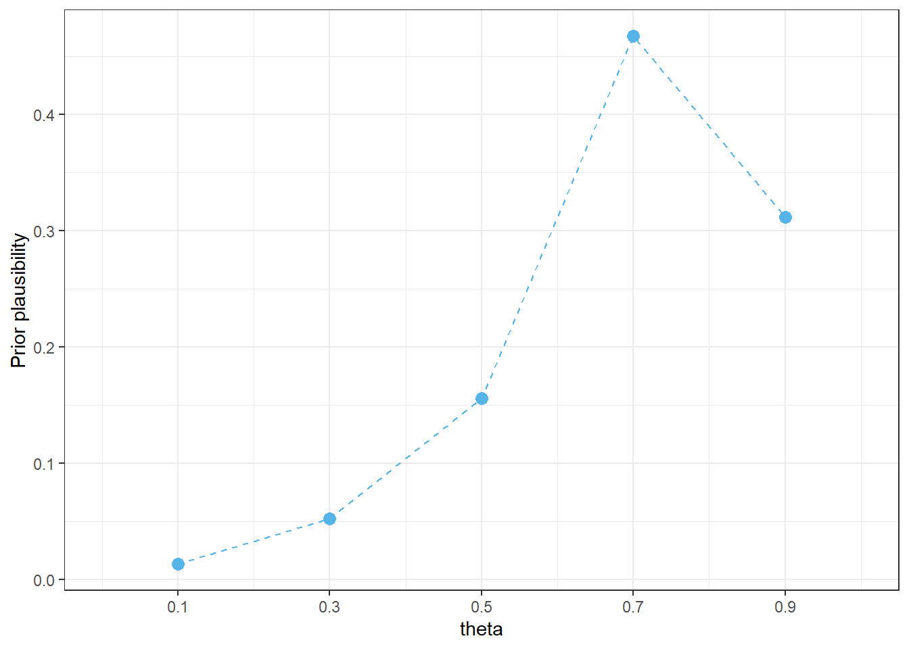
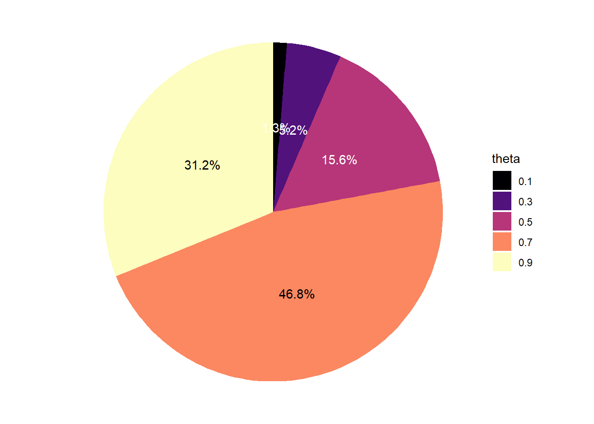
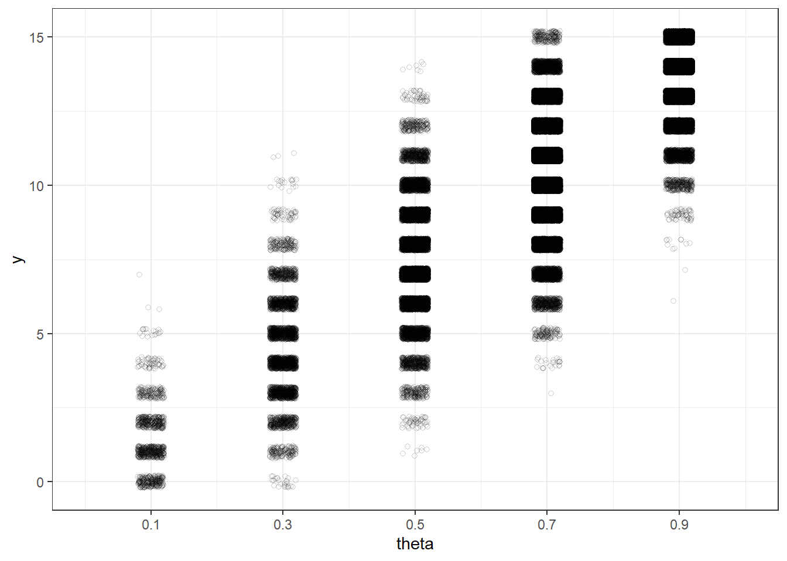
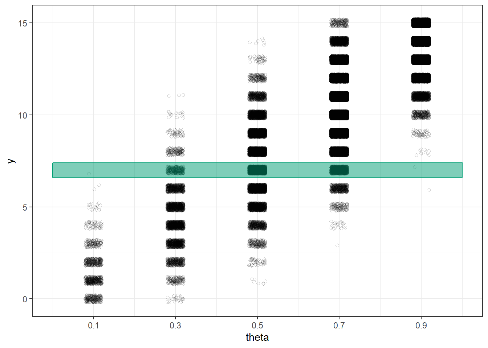
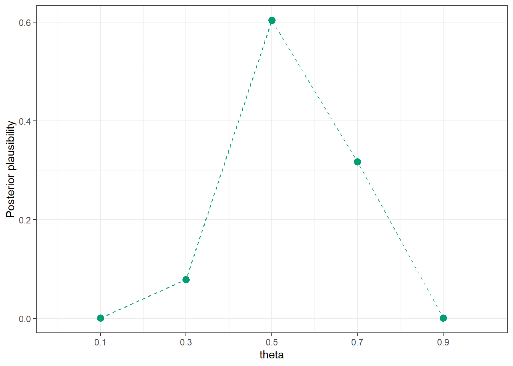

library(tidyverse)
library(janitor)
library(kableExtra)
library(viridis)
library(scales)
bayes_col = c("#56B4E9", "#E69F00", "#009E73")
names(bayes_col) = c("prior", "likelihood", "posterior")
bayes_lty = c("dashed", "dotted", "solid")
names(bayes_lty) = c("prior", "likelihood", "posterior")2 Introductory Example
Statistics is the science of learning from data. But what is “Bayesian” statistics? This handout provides a relatively simple and brief example of a Bayesian statistical analysis. As you work through the example, think about: What aspects are familiar? What features are new or different? Think big picture for now; we’ll fill in lots of details later.
Suppose we’re interested in the proportion of all current Cal Poly students who have ever read at least one book in the Harry Potter series. We’ll refer to this unknown proportion as the “population proportion”, and denote it by \(\theta\) (the Greek letter “theta”).
We will collect data on a sample of students and use the sample data to make conclusions about \(\theta\). In particular, given the sample data, what values are more or less plausible for \(\theta\)?
We’ll make a plausibility assessment before collecting sample data (the “prior distribution”), and then revise our assessment after we have observed some data (the “posterior distribution”).
Example 2.1 To illustrate ideas, we’ll start by considering only the values 0.1, 0.3, 0.5, 0.7, 0.9 as possible for the population proportion \(\theta\). (Of course this is unrealistic; we’ll consider a more practical situation later.) That is, we want to assess our relative plausibility of the statements:
- 10% of current students have read a Harry Potter book
- 30% of current students have read a Harry Potter book
- 50% of current students have read a Harry Potter book
- 70% of current students have read a Harry Potter book
- 90% of current students have read a Harry Potter book
Before collecting data, which of these values — 0.1, 0.3, 0.5, 0.7, 0.9 — do you think is the least plausible for \(\theta\)?
Which value — 0.1, 0.3, 0.5, 0.7, 0.9 — do you think is the next least plausible? Roughly, how many times more plausible do you think it is than the one from the previous part?
For example, suppose you think that 0.1 is the least plausible and 0.3 is the next least plausible value of \(\theta\). If you think that 0.3 is 1.5 times more plausible than 0.1, then, roughly, you would be willing to engage in a bet that \(\theta\) is 0.1 versus 0.3 at 1.5-to-1 (or 3-to-2) odds.
Continue in the manner of the previous part to assign a relative plausibility to each of the values 0.1, 0.3, 0.5, 0.7, 0.9. Suppose that your least plausible value represents 1 “unit of plausibility”. How many “units of plausibility” does each of the other values represent? (Assume that each of the five values has some plausibility, no matter how small; don’t assign 0 plausibility to any of the values.)
If 0.1, 0.3, 0.5, 0.7, 0.9 are the only possible values of \(\theta\), then they should account for 100% of your total plausibility. Using your relative plausibilities from the previous part, what percent of your total plausibility does each of the values 0.1, 0.3, 0.5, 0.7, 0.9 represent? Make a table and a plot of your assessment.
Example 2.2 Now suppose we will select a random sample of \(n = 15\) current students. Let \(y\) denote the number of students in the sample who have read a Harry Potter book. Before collecting data, we’ll use simulation to consider what might happen when we select the sample.
If \(\theta = 0.1\) what do you expect \(y\) to be? That is, if in reality 10% of all current Cal Poly students have read a Harry Potter book, how many students in a random sample of 15 would you expect to have read a Harry Potter book? Is this necessarily what we would see?
If \(\theta = 0.1\), how could we use a physical object (e.g., ten-sided die, spinner) to simulate a single potential value of \(y\)?
If \(\theta = 0.3\) what do you expect \(y\) to be? That is, if in reality 30% of all current Cal Poly students have read a Harry Potter book, how many students in a random sample of 15 would you expect to have read a Harry Potter book? Is this necessarily what we would see?
If \(\theta = 0.3\), how could we use a physical object (e.g., ten-sided die, spinner) to simulate a single potential value of \(y\)?
We could continue in the previous way to describe how to simulate a value of \(y\) given each of the possible values of \(\theta\). Now suppose we want to simulate a single potential value of \(y\). How should we determine which value of \(\theta\) to use?
Describe a two-stage method for simulating \((\theta, y)\) pairs that reflects both (1) our prior plausibility assessment of \(\theta\), and (2) the natural sample-to-sample variability of values of \(y\) for given \(\theta\).
Conduct a few repetitions of the simulation. We’ll collect our results in a plot on the board; you can sketch that plot here.
Example 2.3 So far we have considered what might happen when we collect sample data. But now we’ll actually collect some data. Suppose that we observe \(y = 7\) students who have read a Harry Potter book in a sample of \(n = 15\) students.
Remember that we started with guesses about which values of the population proportion were more plausible than others, and we used these guesses to get a picture of what might happen in samples. Now we’ll reconsider our plausibility assessment in light of the sample data that we actually observed.
How do you think our plausibility assessment will change given the sample data (\(y = 7\), \(n=15\))?
How might we use the results of the simulation in the previous example to reassess our plausibility of 0.1, 0.3, 0.5, 0.7, 0.9 as values of \(\theta\) given the sample data (\(y = 7\), \(n=15\))?
Use the simulation results to sketch a plot that represents our plausibility assessment of \(\theta\) given the sample data. Rank 0.1, 0.3, 0.5, 0.7, 0.9 from most to least plausible as values of \(\theta\). (See Figure 2.4 and Figure 2.5 below for a simulation with more repetitions.)
Compare our plausibility assessment after observing the sample data with our prior assessment. Which values are now more plausible for \(\theta\) than they were before? Less? Does this make sense? Why?
Example 2.4 Now we’ll look a little bit more closely at just how our posterior plausibilities were determined. This is just a brief introduction; we’ll study the principles in much more depth soon.
Prior to observing data, how many times more plausible is 0.5 as the value of \(\theta\) than 0.3?
Use software or a simulation applet (like this one, using left tail and right tail) to compute the probability of observing \(y= 7\) in a sample of size \(n=15\) if \(\theta = 0.5\). Interpret this probability.
Use software or a simulation applet (like this one, using left tail and right tail) to compute the probability of observing \(y= 7\) in a sample of size \(n=15\) if \(\theta = 0.3\). Interpret this probability.
How many times more likely is it to observe \(y=7\) in a sample of size \(n=15\) if \(\theta = 0.5\) than if \(\theta = 0.3\)?
Based on the simulation results, what are the plausibilities of 0.5 and 0.3 after observing data? After observing data, how many times more plausible is 0.5 as the value of \(\theta\) than 0.3?
In what relatively simple way are the three previous ratios related? (Since simulated values are only approximations, you need to think in terms of \(\approx\) rather than =. When we introduce the underlying theory, we’ll see that this is an = relationship.)
Suggest a general principle for finding relative posterior plausibility of any two possible values of \(\theta\).
Given relative posterior plausibilities for all possible values of \(\theta\), how you would find the posterior plausibilities?
Describe how you might compute the posterior plausibilities without using simulation. Think in terms of a spreadsheet; what are the rows? What are the necessary columns and how would you fill them in? What if any value between 0 and 1 is plausible (not just 0.1, 0.3, 0.5, 0.7, 0.9)?
2.1 Notes
2.1.1 Prior plausibility
Your initial plausibility is whatever it is and reflects your background knowledge of this situation before collecting sample data. Different people will have different assessments so there are many reasonable choices.
So that we’re all on the same page, suppose that before collecting sample data, our prior assessment of possible values of \(\theta\), from least to most plausible, is that:
- 0.1 is least plausible
- 0.3 is 4 times more plausible than 0.1
- 0.5 is 3 times more plausible than 0.3
- 0.9 is 2 times more plausible than 0.5
- 0.7 is 1.5 times more plausible than 0.9
# Possible values of theta
theta = seq(0.1, 0.9, by = 0.2)
# Relative plausibilities, with least plausible as baseline of 1 unit
prior_units = c(1, 4, 3 * 4, 1.5 * 2 * 3 * 4, 2 * 3 * 4)
# Rescale units to sum to 1
prior = prior_units / sum(prior_units)
prior_table = data.frame(theta, prior_units, prior)
# Display prior distribution as a table
prior_table |>
adorn_totals("row") |>
kbl(col.names = c("theta",
"Prior \"units\" ",
"Prior plausibility"),
digits = 4) |>
kable_styling()| theta | Prior "units" | Prior plausibility |
|---|---|---|
| 0.1 | 1 | 0.0130 |
| 0.3 | 4 | 0.0519 |
| 0.5 | 12 | 0.1558 |
| 0.7 | 36 | 0.4675 |
| 0.9 | 24 | 0.3117 |
| Total | 77 | 1.0000 |
# Plot of prior distribution
prior_table |>
ggplot(aes(x = theta,
y = prior)) +
geom_point(col = bayes_col["prior"], size = 3) +
geom_line(linetype = bayes_lty["prior"], col = bayes_col["prior"]) +
scale_x_continuous(limits = c(0, 1), breaks = theta) +
labs(y = "Prior plausibility") +
theme_bw()
# Pie chart "spinner" for prior distribution
prior_table |>
mutate(theta = factor(theta)) |>
ggplot(aes(x = "",
y = -prior, # - for clockwise
fill = theta)) +
geom_bar(stat = "identity") +
coord_polar("y") +
scale_fill_viridis_d(option = "magma") +
geom_text(aes(label = percent(prior),
color = prior > 0.5 * max(prior)),
position = position_stack(vjust = 0.5)) +
scale_color_manual(guide = "none", values = c("white", "black")) +
theme_void()

2.1.2 Simulation
n = 15
n_rep = 100000
# Simulate values of theta from the prior distribution
theta_sim = sample(theta, n_rep, replace = TRUE, prob = prior)
# For each simulated value of theta, simulate a value of y from Binomial(n, theta)
y_sim = rbinom(n_rep, n, theta_sim)
sim = data.frame(theta_sim, y_sim)
# Display the (theta, y) results of a few repetitions
sim |> head(10) |> kbl()| theta_sim | y_sim |
|---|---|
| 0.7 | 11 |
| 0.7 | 12 |
| 0.7 | 9 |
| 0.7 | 11 |
| 0.9 | 12 |
| 0.7 | 11 |
| 0.7 | 8 |
| 0.7 | 13 |
| 0.7 | 10 |
| 0.7 | 10 |
# Plot the simulated (theta, y) pairs
theta_y_plot <- sim |>
ggplot(aes(x = theta_sim,
y = y_sim)) +
geom_jitter(width = 0.02, height = 0.2, shape = 21, alpha = 0.2) +
scale_x_continuous(limits = c(0, 1), breaks = theta) +
scale_y_continuous(breaks = seq(0, n, 5)) +
labs(x = "theta",
y = "y") +
theme_bw()
theta_y_plot
2.1.3 Posterior plausibility
# Observed data
y_obs = 7
# Only keep simulated (theta, y) pairs with y = 7
sim |>
filter(y_sim == y_obs) |>
head(10) |> kbl()| theta_sim | y_sim |
|---|---|
| 0.7 | 7 |
| 0.5 | 7 |
| 0.5 | 7 |
| 0.3 | 7 |
| 0.5 | 7 |
| 0.5 | 7 |
| 0.5 | 7 |
| 0.5 | 7 |
| 0.7 | 7 |
| 0.5 | 7 |
# Plot the simulated (theta, y) pairs from before, with y = 7 highlighted
theta_y_plot +
annotate("rect", xmin = 0, xmax = 1,
ymin = y_obs - 0.4, ymax = y_obs + 0.4, alpha = 0.5,
color = bayes_col["posterior"],
fill = bayes_col["posterior"])
# Only keep (theta, y) pairs with y = 7, and summarize the theta values
sim_posterior_table = sim |>
filter(y_sim == y_obs) |>
count(theta_sim, name = "freq") |>
mutate(rel_freq = freq / sum(freq))
# Display the approximate posterior plausibility in a table
sim_posterior_table |>
adorn_totals("row") |>
kbl(col.names = c("theta",
paste("Simulated repetitions with y =", y_obs),
"Approximate posterior plausibility"),
digits = 4) |>
kable_styling()| theta | Simulated repetitions with y = 7 | Approximate posterior plausibility |
|---|---|---|
| 0.1 | 1 | 0.0002 |
| 0.3 | 407 | 0.0784 |
| 0.5 | 3137 | 0.6040 |
| 0.7 | 1648 | 0.3173 |
| 0.9 | 1 | 0.0002 |
| Total | 5194 | 1.0000 |
# Plot the simulated posterior plausibility of theta given y = 7
sim_posterior_table |>
ggplot(aes(x = theta_sim,
y = rel_freq)) +
geom_point(col = bayes_col["posterior"], size = 3) +
geom_line(linetype = "dashed", col = bayes_col["posterior"]) +
scale_x_continuous(limits = c(0, 1), breaks = theta) +
labs(x = "theta",
y = "Posterior plausibility") +
theme_bw()